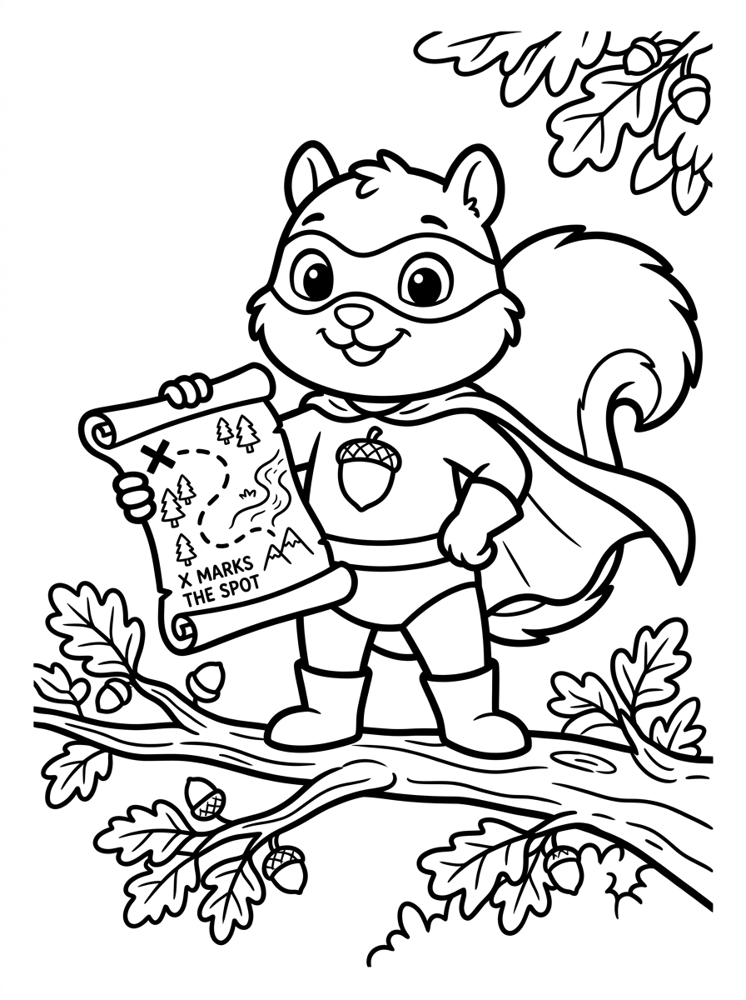
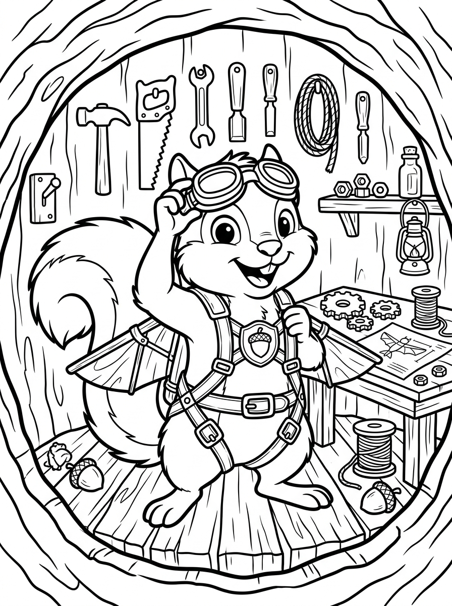
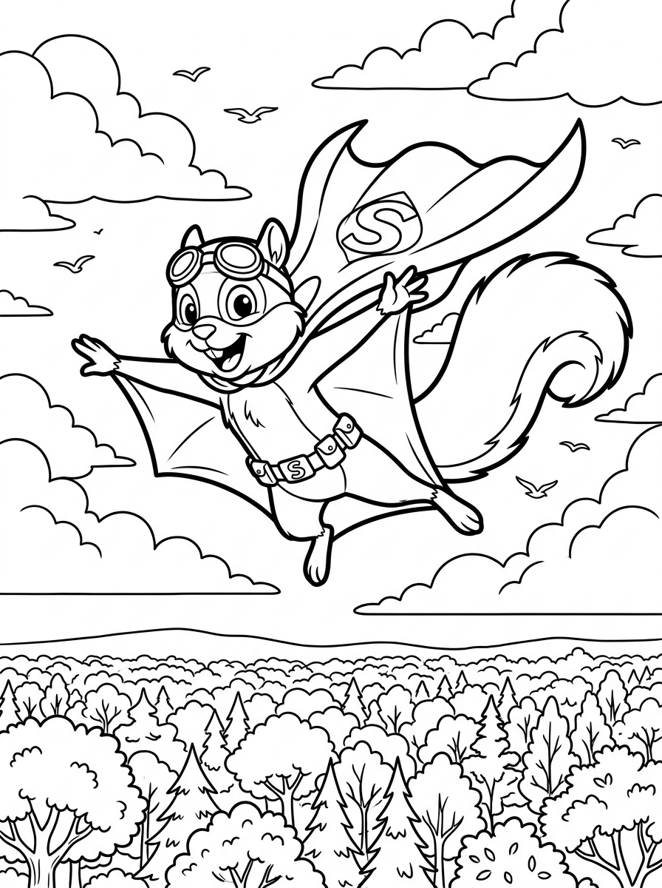
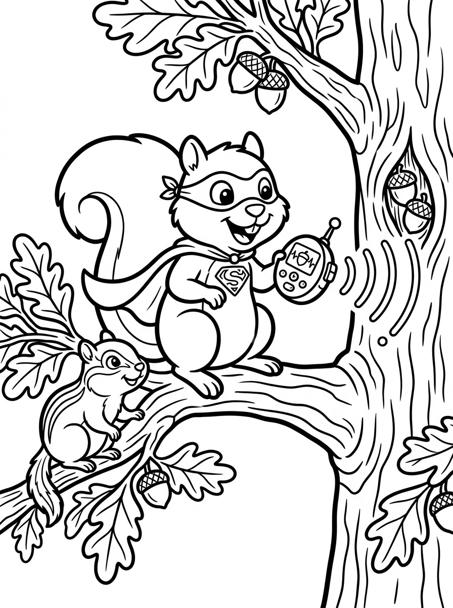
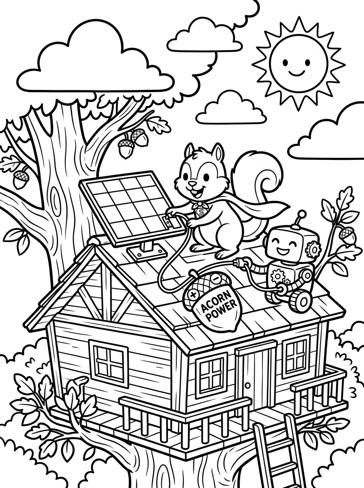
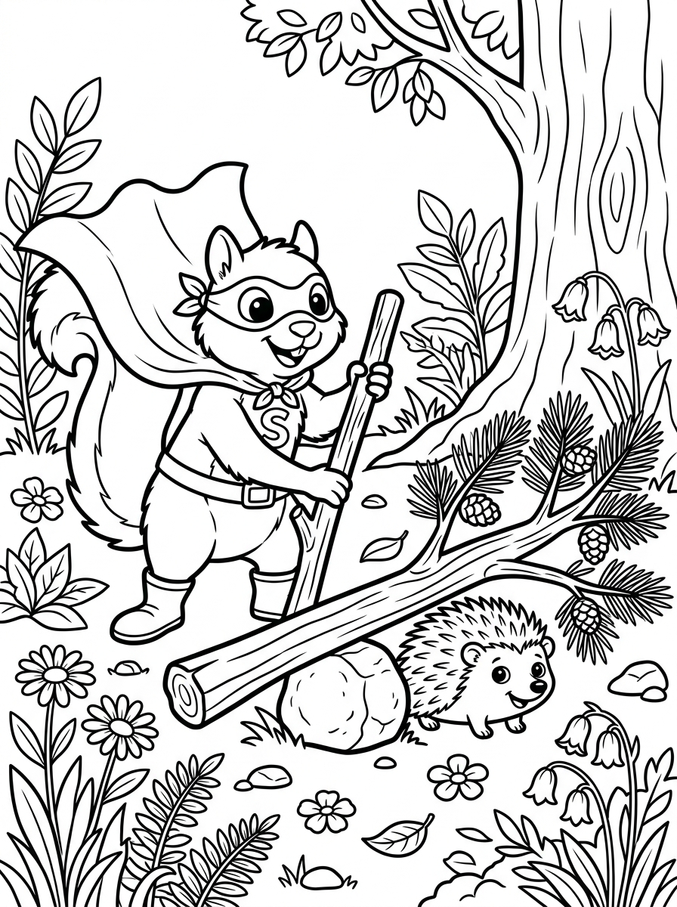
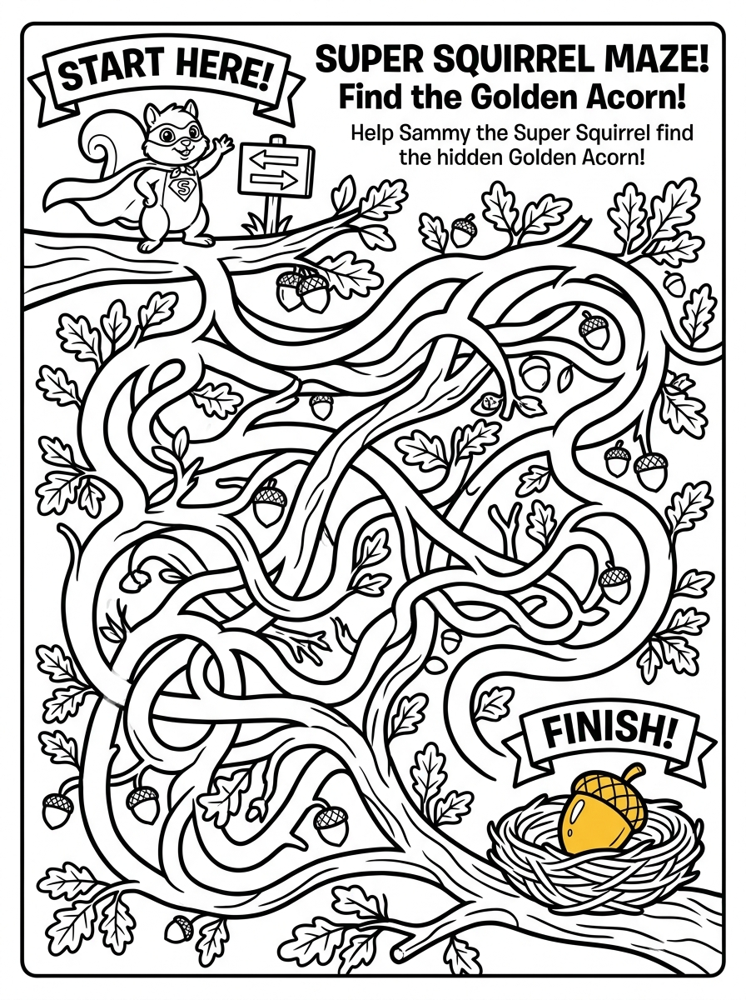
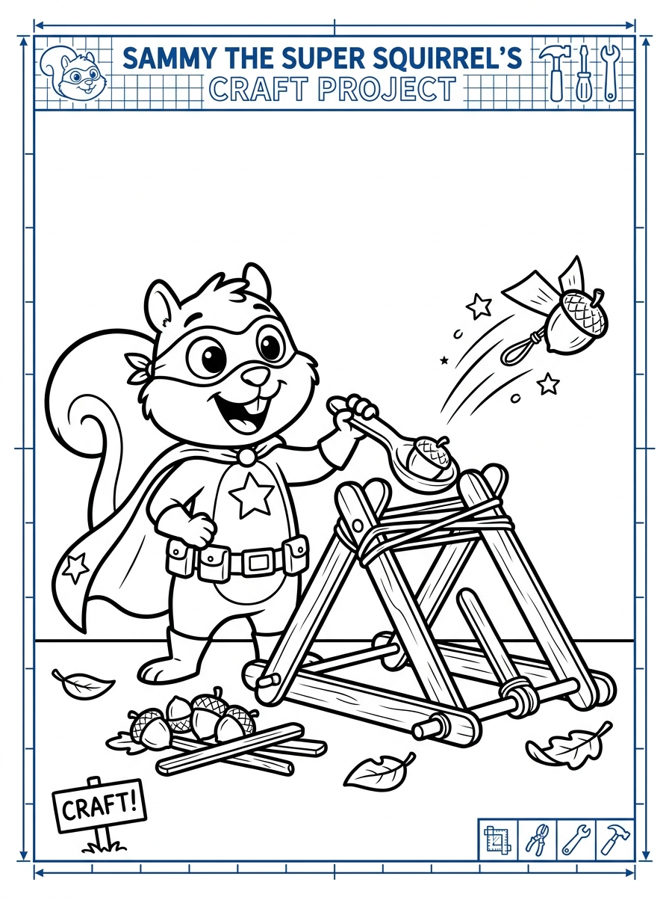

At the peak of the Great Forest Oak Tree, Sammy the Super Squirrel bounces with joyful excitement on a mossy branch, his fast-thinking ADHD brain buzzing with ten brilliant ideas all at once! He unrolls an ancient woodland tree-map, using his wooden ruler and deep breaths to channel his lightning-fast thoughts into a clear flight plan. His superhero cape ripples in the morning breeze while the golden acorn emblem on his chest shines brightly in the rising sunlight. In the soft clouds drifting past and the oak leaf veins below, three hidden 'Cross-my-heart' shapes are cleverly woven into the scene. Sammy smiles with deep Patience, proving that when an energetic hero takes time to organize big ideas, boundless curiosity becomes a world-changing superpower.

Inside his hollow-trunk workshop, Sammy channels his bustling physical energy by organizing his flight gear, clicking the sturdy buckles of his Acorn Glider harness securely into place. Pinned to the cedar wall, a colorful visual checklist with bright pictures helps his ADHD mind remember every single pre-flight step without getting distracted. Tucked into the wooden tool pegs and hanging pinecone lamps in the background, four hidden 'Star of Hope' shapes shimmer in the cozy workshop light. Demonstrating the virtue of Self-Control, Sammy spins his favorite acorn fidget-gyro in his paw to calm his racing excitement before takeoff. Outside the tree window, a gentle morning dew confirms optimal weather conditions for testing his new aerial gear.

With an exhilarating leap from the highest bough, Super Squirrel’s boundless energy transforms into pure aerial magic as he glides across the wide open sky! His active mind tracks wind currents, singing birds, and tree branches in a split second, reacting faster than any ordinary squirrel. Three hidden 'Cross-my-heart' shapes drift peacefully within the wispy cloud ribbons and swirling leaf trails behind him. This exhilarating flight celebrates the virtue of Joy, demonstrating that what some call hyperactivity is actually Sammy’s secret rocket-fuel when soaring in the direction of his dreams. Down below in the green forest clearings, friendly rabbits and blue jays gaze upward in delight as Sammy executes a graceful loop-de-loop.

Perched high in an ancient elm, Super Squirrel activates his handheld Acorn Radar Scanner, his hyper-observant eyes noticing faint paw tracks that everyone else walked right past. The gentle scanner waves detect fallen oak acorns that got buried beneath autumn leaves, ensuring no woodland creature goes hungry this season. Four distinct 'Ichthys Fish' symbols are cleverly tucked within the scanner wave ripples and distant branch textures. Super Squirrel exercises Goodness by dedicating his advanced tracking technology to caring for the forest ecosystem and protecting nature's bounty. A friendly chipmunk watches eagerly from a nearby twig, learning how sound pulses bounce back to find buried treasures.

Working alongside his robotic woodland helper, Super Squirrel installs a glistening miniature solar leaf panel atop the sunny lookout tower. His energetic paws move with enthusiastic speed, carefully connecting bright red and black insulated wires from the clean solar collector to an acorn battery pack that will power the forest emergency beacons all night. Four hidden 'Star of Hope' shapes twinkle among the sunbeams and solar panel grid facets. The moment highlights the virtue of Faithfulness, reminding builders that clean solar energy stays faithful every time the morning sun shines down. Super Squirrel tightens each brass terminal screw with care, smiling as a warm green indicator LED lights up.

Hearing a quiet rustling down on the forest floor, Super Squirrel swoops down gently to discover a timid baby hedgehog trapped beneath a heavy fallen pine branch. Using his biomechanical acorn lever and calm, measured power, Super Squirrel gently lifts the heavy bark without scaring the little critter. Three hidden 'Anchor of Peace' shapes are carved gracefully into the tree bark grooves and forest moss. The scene exemplifies the virtue of Kindness and Gentleness, teaching young heroes that great strength and big energy should always be used to protect and comfort those in need. The little hedgehog wiggles out safely, nose twitching with gratitude as Sammy offers a comforting high-five.
Use the locked prompt formula on the right with Midjourney / Flux / SDXL to render this page.
Back at his tree-hollow lab desk, Super Squirrel enters his legendary 'Hyper-Focus Zone,' completely engrossed in programming an automated acorn-sorting machine. When a project captures his heart, his ADHD brain locks in with superhuman concentration that can build complex inventions in record time! Bright wooden block code commands labeled IF SENSE NUT, THEN ROLL BASKET click smoothly into place, turning smart ideas into working robotic machinery. Tucked among the floating logic arrows and hanging vine coils, three hidden 'Cross-my-heart' shapes wait to be discovered. Sammy shows that hyper-focus is an extraordinary gift when harnessed with Wisdom to bless the entire woodland community.
Use the locked prompt formula on the right with Midjourney / Flux / SDXL to render this page.
In the center of the sunny woodland meadow, Super Squirrel arrives with a rolling cedar cart piled high with fresh, nutritious acorns and sweet berries. Smiling deer, hedgehogs, birds, and badgers gather around as Sammy shares his bountiful harvest with every family in the forest. Four hidden 'Cross-my-heart' shapes bloom among the meadow wildflowers and picnic basket weaves. This heartwarming feast embodies the virtue of Love and Generosity, showing that true heroism is found in giving freely and lifting up our neighbors. Laughter fills the forest air as woodland friends enjoy a delicious autumn feast together.
Use the locked prompt formula on the right with Midjourney / Flux / SDXL to render this page.
When a sudden thunderstorm gust stops the treetop windmill from spinning, Super Squirrel climbs calmly up the mast with his wooden wrench and oil dropper. Instead of feeling overwhelmed by the whistling wind, he takes three mindful breaths, methodically inspects the cedar gear teeth, and applies a drop of pine resin lubricant to restore smooth rotation. Three hidden 'Anchor of Peace' shapes float quietly inside the clearing sky clouds and windmill blades. The scene inspires Peace, showing that remaining calm under pressure allows young inventors to diagnose mechanical problems with clarity and poise. With a satisfying click, the gear slips into proper alignment and the windmill spins merrily once again.
Use the locked prompt formula on the right with Midjourney / Flux / SDXL to render this page.
In an open sunlit forest glade, the Woodland Council gathers to present Super Squirrel with a hand-carved Golden Oak Leaf Medal of Honor for his unstoppable enthusiasm and service. Whistling birds drop flower petals from above while squirrels, rabbits, and bears cheer enthusiastically for their neurodivergent hero who showed them that being different is a superpower. Five hidden 'Star of Hope' shapes sparkle in the golden medal reflections and festive banner ribbons. The scene celebrates Joy and Gratitude, reminding children that developing technical talents and virtues brings genuine blessing to our world. Super Squirrel places his paw over his heart in humble thanks, eager for tomorrow's next exciting adventure.

An interactive vector line-art maze challenges young rangers to guide Super Squirrel from the green START branch through winding oak tree corridors, leafy bridges, and acorn obstacles to the Golden Oak Acorn at the FINISH nest. Thick, bold black branch walls create clean paths for ages 4-9 to trace with crayons or markers without getting confused. Four hidden 'Ichthys Fish' symbols are cleverly integrated into the branch knots and acorn caps along the trail. The canopy maze reinforces spatial navigation, motor control, and determination as kids help Super Squirrel find the safest route home. Reaching the finish line unlocks a proud Super Squirrel flight badge!

The final page features a safe, hands-on household craft project where kids build a real 'Super Squirrel Acorn Catapult & Glider Launcher' using popsicle sticks, rubber bands, and a cardboard cup. A prominent golden blueprint badge displays 'Mystery Master Clue #1' for the grand annual project, connecting forest ecology with clean renewable engineering. Five hidden 'Star of Hope' shapes decorate the craft blueprint border and tool tray. The page inspires Ingenuity and Stewardship, encouraging kids to test flight trajectories across the room and save their launcher module in their Master Citadel Collector Box!